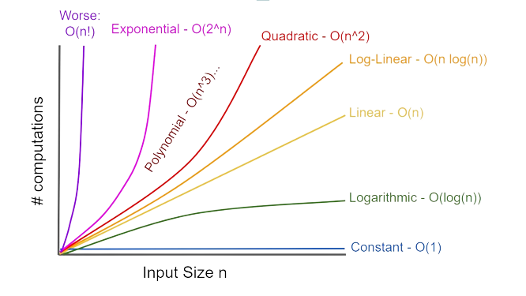

Big O Notation
Alexandra Suvorova, 2023
What is Big O Notation?
Why do we need Big O Notation?
Big-O notation is a way to express the efficiency of an algorithm.
If you’re going to be working with
code,
it is extremely important that you understand Big-O. It is, quite literally, the language we use to express
efficiency.
Types of time complexity of algorithms :
- Constant: O(1)
- Linear time: O(n)
- Logarithmic time: O(log n)
- Long-linear time: O(n log n)
- Quadratic time: O(n^2)
Constant: O(1)

Linear time: O(n)

Logarithmic time: O(log n)

Long-linear time: O(n log n)

Quadratic time: O(n^2)